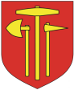

Bochnia - ulica Krzeszowska
 Podczas moich poszukiwań ul. Krzeszowskiej natrafiłem w Sieci na ul. Krzeszowską w Bochni. Można znaleźć tę nazwę na wielu stronach lecz nie można jej znaleźć na mapie dostępnej na oficjalnej stronie miasta ( http://www.planmiasta.bochnia.pl ) - tam występuje tylko i wyłącznie ul. Krzeczowska, czyli różniąca się o tylko jedną literę, ale jednak :-) Tak czy owak nazwa tej ulicy zapewne nie będzie związana z dolnośląskim Krzeszowem lecz z Krzeszowem koło Żywca lub z Krzeszowem nad Sanem (nawet prowadzi od centrum w tamtą stronę).
Dla wyjaśnienia całej sytuacji wysłałem 28 stycznia 2007 roku zapytanie e-mailem do Urzędu Miejskiego w Bochni czy jest to ulica Krzeczowska czy też Krzeszowska - i liczę na odpowiedź :-)
6 lutego 2007 roku przypomniałem sobie ponownie o ulicy Krzeszowskiej w Bochni. Z braku odpowiedzi z Urzędu Miejskiego poszukałem na stronie www.bochnia.pl adresu e-mail burmistrza i ponownie wysłałem to samo zapytanie. Ku mojemu zaskoczeniu w ciągi kilku chwil otrzymałem od burmistrza (Bogdana Kosturkiewicza) odpowiedź, że w Bochni jest tylko ulica Krzeczowska. Tak więc wszelkie informacje na temat ulicy Krzeszowskiej w mieście Bochnia wynikają raczej z błędnego zapisu nazwy ulicy - bo ulicy Krzeszowskiej w tym mieście nie ma :-)